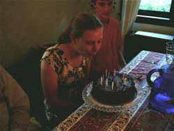
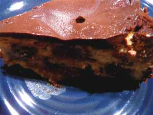

Mom makes brownie cheesecake

The elder daughter of friends who eat dinner with us every week just had a birthday and her favorite cake is cheesecake. I felt like making something a little different from my usual dense, New York-style cake and remembered a brownie cheesecake from Susan Purdy’s A Piece of Cake book, mentioned in a previous post. For those of you who do a lot of baking, this is a great little cookbook and I find myself turning to it often. It’s a lot more approachable than Beranbaum’s Cake Bible; in my opinion, anyway. This cake is called Brownie Mosaic Cheesecake and it looks a bit like a checkerboard cake when you slice it, very pretty.
A couple of notes on the recipe, though. It’s been quite a while since I made it and I can’t remember if I used her recipe for the chocolate crumb crust in the past or just sprinkled the buttered pan with cookie or toasted nut crumbs, which Purdy suggests as an alternative to a crust. I didn’t have the chocolate wafers the recipe calls for (these can be hard to find) so I used packaged chocolate chip cookies instead, weighing out the same amount and adding a couple of tablespoons of baking cocoa so the crust would be chocolate. Unless I did something vastly wrong, or unless the cookies I used had really different properties than the wafers would, Purdy’s proportions in her crust recipe are off. Instead of the slightly dry, sandy texture I was expecting I wound up with a gloppy soup, and in fact used a lot more cookies in an attempt to correct it. I still had to chill the pan for over an hour before the mixture was set enough to spread up the sides, and there was no question of pre-baking it. I stuck it in the freezer while I mixed up the cake, and poured the cake into the chilled, unbaked crust. I’ll give you Purdy’s recipe but if you have a favorite chocolate crumb crust recipe go ahead and use that instead.
Then there is the brownie recipe, which I used to think was terrific, and in fact used to use occasionally as a stand-alone brownie recipe. I now think it’s too sweet and not nearly chocolaty enough, but in the cheesecake it works as it provides a good contrast to the rich, cheesy cake. I’ve been spoiled by the Cook’s Illustrated brownies, which are really the ultimate brownie, with their three chocolates. I’ll have to blog about them soon.
Brownie Mosaic Cheesecake from A Piece of Cake, by Susan G. Purdy, 1989
Chocolate Crumb Crust
- 1 3/4 cups chocolate wafer crumbs (8 1/2 oz. package wafers)
- 7 tablespoons butter, melted
- Note: 3 oz. toasted, ground hazelnuts, almonds, or walnuts can be liberally sprinkled over buttered pan sides and bottom instead of butter-cookie mixture
Combine wafer crumbs and melted butter and press evenly onto bottom and sides of buttered 9 1/2-inch springform pan. Chill pan while preparing remainder of cake.
Brownies
- 2 oz. semi-sweet chocolate, chopped
- 1/2 cup butter
- 7/8 cup granulated sugar
- 2 large eggs, lightly beaten
- 1/4 teaspoon vanilla extract
- 1/2 teaspoon baking powder
- 1/2 teaspoon salt
- 1/2 cup unsifted all-purpose flour
Preheat oven to 350º. Butter 8-inch square pan and line with parchment paper, butter paper. In a 2-quart saucepan over low heat, melt together the chocolate and butter. Stir to blend, then stir in sugar. Remove pan from heat. Add the eggs, stirring constantly until well blended. Add remaining ingredients, stirring until smooth. Pour batter into the prepared pan and bake in the center of the preheated oven for 22-25 minutes, until a toothpick comes out just slightly moist rather than completely clean. The top should look shiny with a slightly crackled surface. Do not overbake; the brownies should be moist rather than dry. Cool in the pan on a rack for a few minutes, then invert and peel off paper. Cool brownies, then cut them into 3/4- to 1-inch squares for use in the cheesecake. You will have about 2 cups of loosely measured cubes. Add cubes to cake batter as directed below.
Cheesecake
- Three 8-oz. packages cream cheese, at room temperature
- 1 cup granulated sugar
- 1/8 teaspoon salt
- 3 large eggs
- 1 cup sour cream
- 1 teaspoon vanilla

Preheat oven to 350º. Attach the flat paddle to your electric mixer. In the large bowl of the mixer, beat the cream cheese until smooth and soft. Add sugar and salt and beat until mixture is very creamy and smooth. Stop the mixer and scrape down the beater and the inside of the bowl several times. Add eggs, one at a time, and beat after each addition. Add 1 cup sour cream and the vanilla and beat until well combined. Or you can use your food processor like I did and add ingredients in the order given, scraping bowl and processing until smooth. Fold brownie cubes in very gently and pour mixture into prepared pan. Set filled pan on jelly-roll pan for ease in handling. Set cake in center of pre-heated oven to bake for 50 minutes, or until the top has a dull finish but is dry to the touch; the surface should move slightly when you tap the side of the pan, but it should not jiggle in waves as if it were liquid. Remove cake from oven and set on rack in a draft-free location to cool thoroughly. When completely cool, top with following glaze.
Ganache Glaze
- 3 oz. bittersweet chocolate, broken up, or 1/2 cup chocolate morsels
- 2 oz. butter
- 1/4 cup heavy cream
- 1/2 teaspoon vanilla extract
- 1 tablespoon confectioners’ sugar
Grind the chocolate into powder in the food processor, scald the butter and cream in a saucepan (or in a Pyrex cup in the microwave). With the machine running, pour the hot cream/butter mixture slowly through the feed tube onto the chocolate. Blend until completely smooth, stopping machine to scrape down sides once or twice. Add the extract and sugar and process until smooth. Spread over cheesecake while ganache is still warm. Chill until ready to serve.
Comments
Hi! Lovely cheesecake, especially enrobed in chocolate. I’ve made lots of cakes from Purdy’s book, and I think her proportions for crumb crust are spot-on. Your substitute cookies probably had too much moisture for all the melted butter, and the extra chocolate chips might have melted and contributed to the soupy-ness you described. Still looks delicious!
I entirely agree about the Purdy book, and my copy is covered with unsightly food stains to prove it. I must say you are noble to bake a cake in this heat and humidity. It looks yummy.
You could be right about the cookies, M, the chocolate wafers are a lot different in consistency than the cookies I used. But I didn’t add chocolate chips, however, but powdered unsweetened cocoa, which shouldn’t have made it soupier. I’ll have to try it again on a cooler day and when I’m less tired. Thanks for your comment.
Don’t you love Anna’s Swedish butter cake, Lindy?
You are such an inspiration, I’m trying a version of this glorious cheesecake today for my husband’s birthday. To make it easier on myself, I’m using my favorite one-bowl brownie recipe, a four-ingredient cheesecake that always gets rave reviews on Epicurious, and my favorite chocolate crumb crust, made from (I’m so embarrassed to admit)… Chocolate Teddy Grahams. Cross your fingers for me?
Hi, Deb – I think Chocolate Teddy Grahams are a great substitute for the elusive chocolate wafers and no cause for embarrassment! I’ve used them, as well as chocolate graham crackers, myself. I’m intrigued by that four-ingredient cheesecake, however…Have you blogged about it?
Dear M,
Sorry, I know I’m a jerk. What is it about food people that they feel the need to resort to ‘precious’ language? Enrobed? Nonetheless, this IS killer cheesecake and whatever you do, don’t use cookies as a substitute for the Nabisco chocolate wafers. Hold your nose, and use Teddy Grahams.
Add a comment